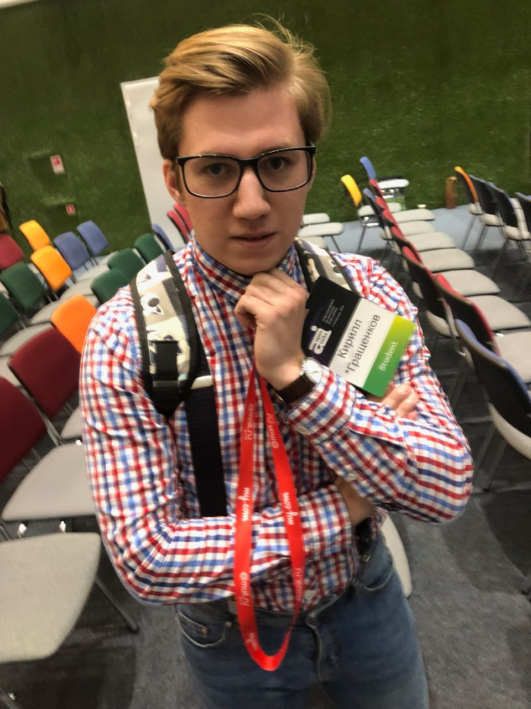

Kirill Grashchenkov, 22

- +7 (915) 641-47-44
- tweet@heisen.me
- Skype: kirforlan
- Telegram: kirillgrashchenkov
- Vk: mipt_study
Education
- Bachelor's degree: Moscow Institute of Physics and Technology (MIPT), 2014 - 2018
- MIPT, Department of Aerophysics and Space Research, 4th‐grade student
- Bachelor thesis: "Application of deep convolutional neural networks in the problem of detecting Antarctic mesocyclones"
Interests
- Machine learning and its applications
- Deep learning and Computer vision
- Space and biomedical researches
- Game theory
Promising acrticles for my future research
- V-Net: Fully Convolutional Neural Networks for Volumetric Medical Image Segmentation
- Dynamic Routing Between Capsules
- Application of Deep Convolutional Neural Networks for Detecting Extreme Weather in Climate Datasets
- Photorealistic Monocular Gaze Redirection Using Machine Learning
Courses and certificates
- Machine learning and data analysis, Yandex, certificate
- Andrew Ng deep learning course, certificate
- Improving Deep Neural Networks, certificate
- Structuring Machine Learning Projects, certificate
- Game theory, certificate
Achievements
- [Confirmed] Attendance the EGU General Assembly, April 8-15, 2018
- Best paper award at OpenTalks.AI ("Convolutional neural networks for Antarctic mesocyclones identification using satellite mosaics data"), February 10,2018
- [Confirmed] Publication at "Automation and Telemechanics", March 30, 2018
Self-study projects
- Rotation angle prediction (github)
- Restoration of a deformed image (github)
- [In progress] Mesocyclones localization and tracking using direct high-resolution satellite observations
- [In progress] Segmentation task for satellite mosaics
Commercial projects
- Property valuation project for investment appraisers (github)
Technologies
- Python; SQL;
- git; bash;
- numpy, Sklearn, pandas, keras, tensorflow, OpenCV, sqlite;
- MacOS, Linux;
- Github: https://github.com/NevzaimnayaLove
Hobbies
- Reading
- Making machine learning projects
- Passing different types of courses at Coursera and Heisen.me